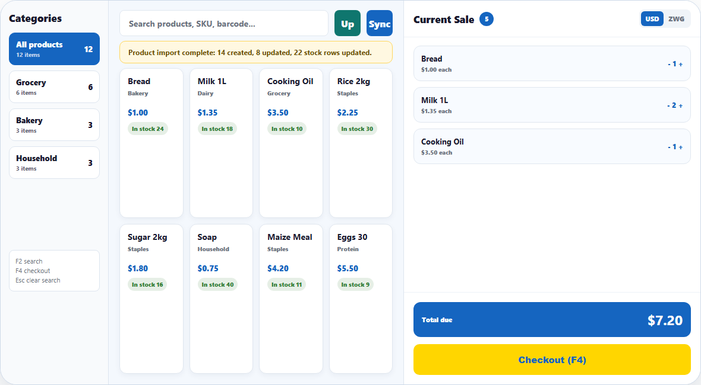
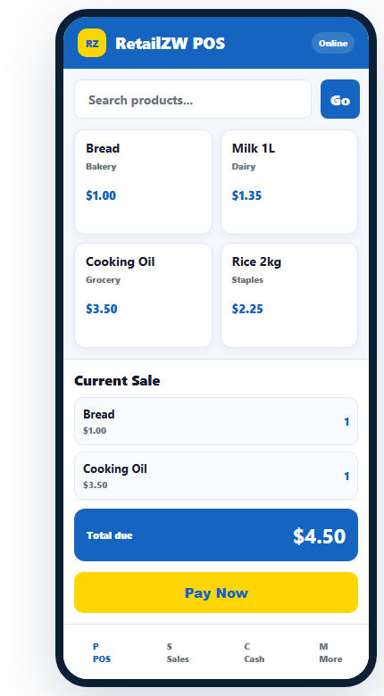

Built for growing retail shops
The Retail Zim story starts at the till and grows into a full shop platform.
Advertise the system clearly: cashiers sell on Windows, managers check stock on mobile, owners watch reports in the cloud, and customers get a faster checkout experience.
POSInventoryPaymentsReportsCommunity


The story
Retail Zim connects the daily work of a shop.
Cashier sells
The till stays focused on products, cart totals, payments, and receipts.
Manager controls stock
Products, Excel imports, quantities, and branch movement stay visible.
Owner watches the cloud
The dashboard shows shops, subscriptions, reports, and platform health.
Community improves the product
Users post questions, guides, ideas, and release feedback.
Modules
A complete retail platform, not just a landing page.
Each module advertises what the system does and gives users a clear reason to register, login, download, or ask for help.
Windows POS
Fast checkout, 80mm receipts, barcode search, shifts, and offline-ready selling.
Mobile POS
Sell from a phone, check stock, build carts, and keep managers close to the floor.
Inventory
Import products from Excel, control quantities, prices, categories, and branches.
Cloud Admin
Monitor shops, users, reports, subscriptions, support, and growth from one dashboard.
Payments
Explain and record cash, EcoCash, card, bank transfer, customer account, and split tenders.
Community
A place for guides, comments, feature requests, release news, and support engagement.
Actual product screens
Show the real tools before users download.
Website visitors see the Windows POS, mobile checkout, and cloud admin dashboard in one clean product story.

Cloud admin dashboard
Monitor shops, users, plans, subscriptions, and support.
Windows POS checkout
Fast sales, cart totals, and payment workflows.
Mobile POS
Phone-first selling and product lookup.
Instructions
Teach users how to use the platform.
The site now has a product education path so shop owners understand the system before they register.
Payment types
Explain how shops can take and track payments.
Payment options are presented clearly for marketing, training, and future database reporting.
Cash
USD, local cash handling, tenders, and change due.
EcoCash / Mobile Money
Record mobile money references against each sale.
Card / Swipe
Track POS terminal payments and cash-up totals.
Bank Transfer
Capture transfer notes for high-value or account sales.
Customer Account
Support account-based customers and held balances.
Split Tender
Accept mixed payment types for one checkout.
Download center
Get the right Retail Zim app for the device.
Make app downloads part of the sales story instead of hiding them.
Windows POS for tills
Installer for shop computers, cashiers, receipt printing, shifts, and product imports.
Mobile POS app
Phone selling, stock checks, customer support, and daily activity on the move.
Community database
Turn visitors into a living Retail Zim community.
Posts and engagement are stored in SQLite on PHP hosting. This gives you a base for questions, tutorials, feature requests, and news engagement.
View analyticsGuidefeatured
Retail Zim Team - Platform
Start here: register your shop, import products from Excel, open a shift, sell, then close the shift report.
Receiptsanswered
MSN Grocery - Harare
How do I keep 80mm receipts centered on my thermal printer?
Productssolved
Tariro - Bottle Store
Can I import product quantities, prices, and categories from one Excel document?
Guides and news
Keep teaching, announcing, and supporting.
How to import products from Excel
Prepare product names, prices, quantities, and categories before your first sale.
Cashier shift workflow
Open shift, sell, take payment, print receipts, and close shift cleanly.
Windows POS installer ready
Download the latest installer and portable ZIP for till computers.
Plans
Start with a simple package and grow.
Starter
For one shop- Windows POS
- Product imports
- Basic sales reports
Growth
For busy retailers- Multiple users
- Mobile POS
- Inventory and support
Platform
For multi-branch groups- SaaS admin
- Subscriptions
- Advanced reporting
Retail Zim is ready to advertise, educate, download, and engage.
The website now tells the story of the system and records the audience that interacts with it.